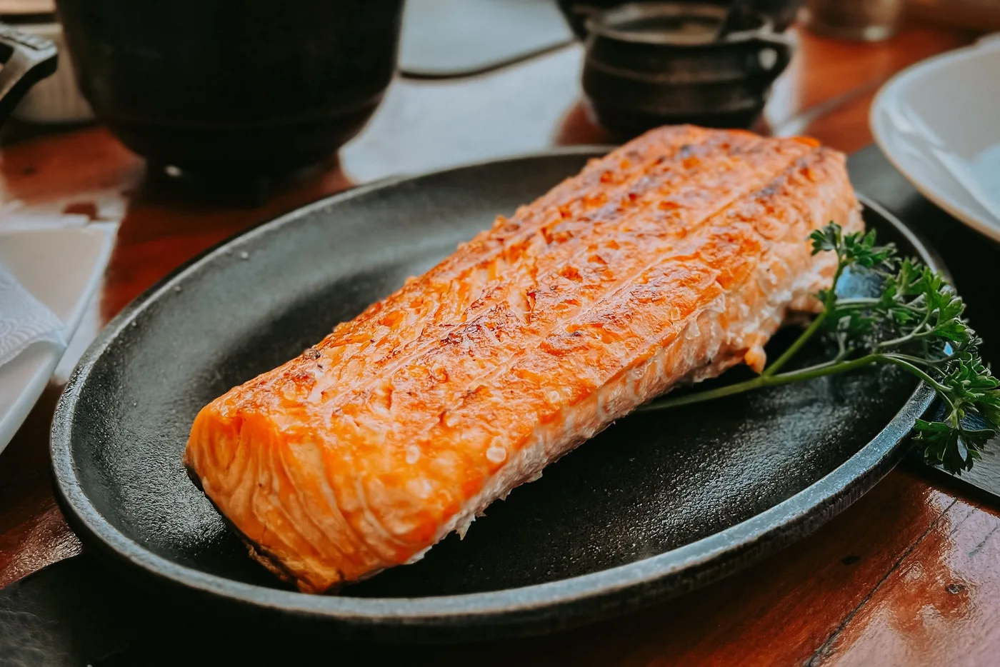
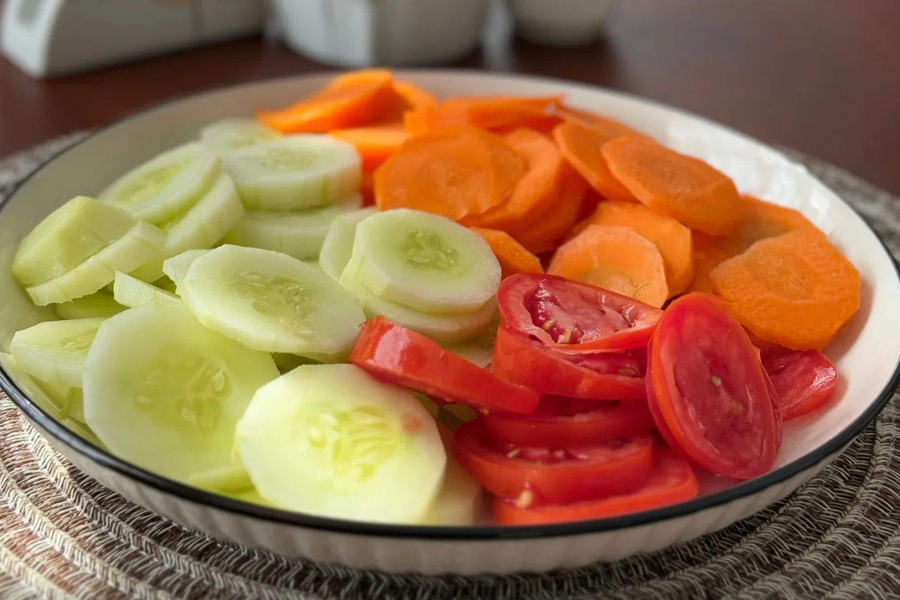

Você faz dieta, emagrece… e depois ganha tudo de novo?
Se você já passou por isso, saiba que não está sozinha.
É comum começar uma dieta cheia de motivação, cortar alimentos que gosta, resistir às tentações por algumas semanas e ver o peso diminuir. Mas, algum tempo depois, a fome aumenta, a rotina aperta e os antigos hábitos voltam. O resultado? O peso também.
Durante muito tempo, isso foi interpretado como falta de disciplina. Hoje, sabemos que não é tão simples assim.
Emagrecer envolve muito mais do que "comer menos". Nosso organismo possui mecanismos que regulam a fome, a saciedade e o gasto energético, tornando esse processo muito mais complexo do que parece.
A boa notícia é que a ciência já identificou quais estratégias realmente funcionam para perder gordura sem recorrer a dietas radicais.
O que realmente faz uma pessoa emagrecer?
Apesar da quantidade de informações nas redes sociais, o princípio básico do emagrecimento continua o mesmo: para perder gordura, é necessário consumir menos energia do que o corpo gasta ao longo do dia. Esse processo é chamado de déficit calórico.
Quando isso acontece de forma consistente, o organismo utiliza parte da gordura armazenada como fonte de energia.
Mas existe um detalhe importante: criar um déficit calórico não significa passar fome.
Na prática, a qualidade da alimentação faz toda a diferença. Uma refeição rica em proteínas, fibras e alimentos minimamente processados costuma promover mais saciedade do que outra com a mesma quantidade de calorias, mas composta por alimentos ultraprocessados.
Por isso, emagrecer não depende apenas da quantidade de comida, mas também da qualidade do que vai ao prato.
Por que dietas restritivas costumam dar errado?
Quem nunca prometeu começar "a dieta da segunda-feira"?
Nos primeiros dias, tudo parece funcionar. Depois, a vontade de comer aumenta, o cansaço aparece e manter a dieta fica cada vez mais difícil.
Isso acontece porque o corpo interpreta uma restrição muito intensa como um período de escassez. Como resposta, hormônios relacionados à fome aumentam, enquanto aqueles ligados à saciedade diminuem. Além disso, o organismo pode reduzir parte do gasto energético para economizar energia.
Ou seja, quanto mais radical é a dieta, maior tende a ser o esforço necessário para mantê-la.
É justamente por isso que muitas pessoas vivem o chamado efeito sanfona: perdem peso rapidamente, mas recuperam tudo pouco tempo depois.
Quais hábitos realmente ajudam no emagrecimento?
Não existe um alimento milagroso, assim como não existe uma dieta perfeita para todas as pessoas. O que sabemos é que alguns hábitos aumentam significativamente as chances de sucesso.
Priorize proteínas em todas as refeições
As proteínas ajudam a preservar a massa muscular durante o emagrecimento e aumentam a sensação de saciedade.
Boas fontes incluem ovos, carnes magras, peixes, leite e derivados, além de leguminosas como feijão, lentilha e grão-de-bico.

Consuma mais alimentos ricos em fibras
Frutas, verduras, legumes, aveia, sementes e leguminosas ajudam a prolongar a saciedade e favorecem a saúde intestinal.
Além disso, uma alimentação rica em fibras costuma estar associada a um melhor controle do peso corporal.

Pratique atividade física regularmente
Embora a alimentação tenha um papel central no emagrecimento, o exercício físico traz benefícios importantes.
Além de aumentar o gasto energético, ajuda a preservar a massa muscular, melhora o condicionamento físico e contribui para a saúde cardiovascular.
A melhor atividade é aquela que faz sentido para sua rotina e que você consegue manter ao longo do tempo.
Cuide do sono
Dormir pouco pode aumentar a fome e dificultar o controle do apetite.
Pesquisas mostram que noites mal dormidas alteram hormônios relacionados à saciedade e aumentam a procura por alimentos mais calóricos. Por isso, cuidar da qualidade do sono também faz parte do processo de emagrecimento.
Aprenda a lidar com o estresse
Muitas pessoas comem não porque estão com fome, mas porque estão cansadas, ansiosas ou sobrecarregadas.
Identificar esses gatilhos é um passo importante para construir uma relação mais saudável com a comida.
Os erros mais comuns de quem quer emagrecer
Algumas atitudes parecem ajudar, mas acabam dificultando o processo. Entre os erros mais frequentes estão:
- •pular refeições para compensar exageros
- •excluir grupos alimentares sem necessidade
- •seguir dietas muito restritivas
- •buscar resultados rápidos
- •comparar seus resultados com os de outras pessoas
- •acreditar que um único alimento é responsável pelo ganho ou pela perda de peso
Na maioria das vezes, pequenas mudanças mantidas por meses geram resultados muito mais consistentes do que grandes mudanças mantidas por poucos dias.
Existe uma velocidade ideal para emagrecer?
Depende de diversos fatores, como peso inicial, idade, nível de atividade física e condições de saúde.
De forma geral, uma perda gradual costuma ser mais sustentável e facilita a manutenção dos resultados.
Mais importante do que emagrecer rapidamente é construir hábitos que possam ser mantidos mesmo depois de atingir o objetivo.
Quando procurar um nutricionista?
Nem sempre é fácil identificar quais mudanças fazem sentido para a sua realidade.
O acompanhamento nutricional permite elaborar um plano alimentar individualizado, respeitando rotina, preferências, objetivos e condições de saúde.
Além disso, o nutricionista pode ajudar a corrigir erros comuns, prevenir deficiências nutricionais e tornar o processo mais leve e sustentável.
Em resumo
Emagrecer de forma saudável não significa cortar carboidratos, eliminar alimentos ou viver contando calorias. Significa criar um estilo de vida que favoreça a perda de gordura sem comprometer a saúde física e mental.
Quando a alimentação é equilibrada, a atividade física faz parte da rotina, o sono é valorizado e as expectativas são realistas, o emagrecimento deixa de ser um projeto temporário e passa a ser consequência de hábitos consistentes.
O melhor plano alimentar não é aquele que promete resultados rápidos. É aquele que você consegue seguir sem transformar sua vida em uma sequência de restrições.
Perguntas frequentes
Qual é a melhor dieta para emagrecer?
Não existe uma única dieta considerada a melhor. A alimentação mais eficaz é aquela que cria um déficit calórico de forma sustentável, respeitando as preferências, a rotina e as necessidades de cada pessoa.
É possível emagrecer sem fazer exercício?
Sim. O emagrecimento depende principalmente do balanço energético. No entanto, a prática de atividade física traz benefícios importantes para a saúde, ajuda a preservar a massa muscular e facilita a manutenção do peso perdido.
Comer carboidrato à noite engorda?
Não. O ganho de peso está relacionado ao consumo energético total ao longo do dia, e não ao horário em que o carboidrato é consumido.
Quanto tempo leva para emagrecer?
O tempo varia de acordo com diversos fatores. O mais importante é evitar comparações e focar na construção de hábitos que possam ser mantidos a longo prazo.
Vamos começar sua rotina?
Conheça o acompanhamento →Referências científicas
- World Health Organization (WHO). Obesity and overweight.
- Academy of Nutrition and Dietetics. Position of the Academy: Interventions for the Treatment of Overweight and Obesity in Adults.
- Hall KD, Kahan S. Maintenance of Lost Weight and Long-Term Management of Obesity. Medical Clinics of North America.
- Jensen MD et al. 2013 AHA/ACC/TOS Guideline for the Management of Overweight and Obesity in Adults.
- Bray GA et al. The Science of Obesity Management: An Endocrine Society Scientific Statement.